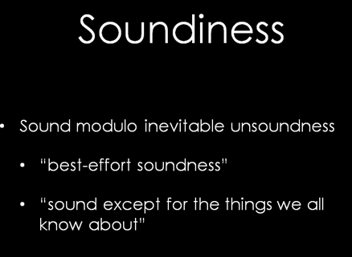
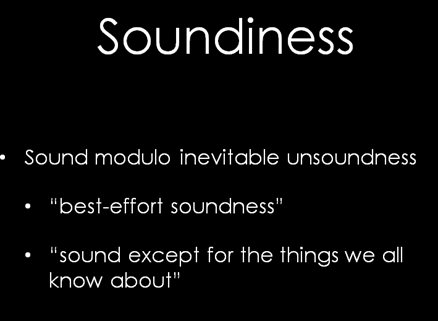

Soundiness home page
This is a stub home page for the soundiness movement in program analysis. More soon.
For now, please enjoy a brief write-up and a presentation on this subject.
|  |
This is a stub home page for the soundiness movement in program analysis. More soon.
For now, please enjoy a brief write-up and a presentation on this subject.
|  |